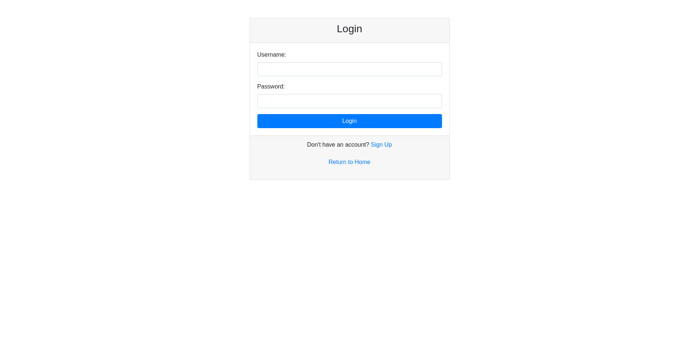
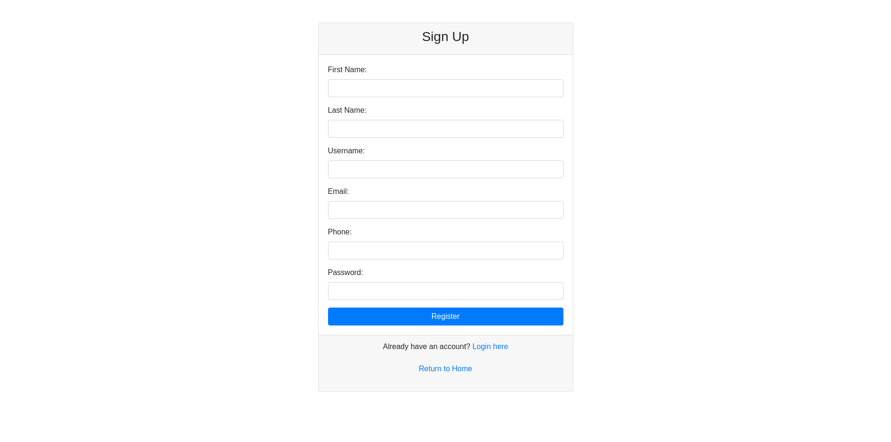
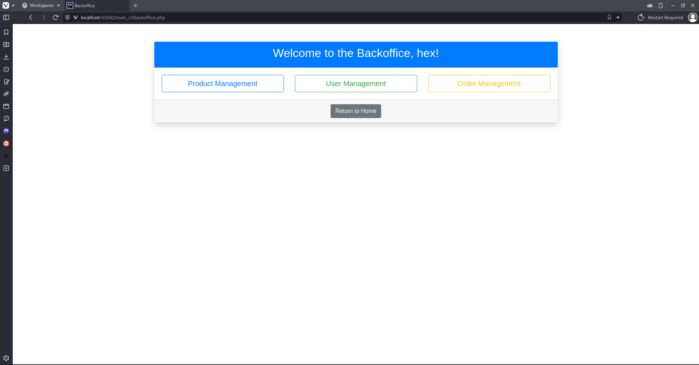

1. Overview
This document outlines the login and registration process for users of the system. There are two user types: Superuser and Normal User. During the registration, all users are automatically assigned the 'normal' role. Only Superusers have the authority to promote or demote users and access the back-office functions such as user and product management.
2. User Types
- Superuser: Has full access to the system, including the back-office for user and product management.
- Normal User: Has limited access to the system, typically to front-end functionality only.
3. Registration Process
- Users can register themselves through the registration page.
- Upon registration, users are automatically assigned the role of a Normal User.
- Only Superusers can change the role of a user (promote to Superuser or demote to Normal User).
4. Login Process
- Both Superusers and Normal Users can log in to the system using their credentials.
- Superusers have access to additional features, including user management and product management in the back office.
Login Credentials:
-
Superuser:
- Username:
hex
- Password:
123qwerty
-
Normal User:
- Username:
doosan
- Password:
123qwerty
5. User Management
- Superusers have access to a back-office panel where they can manage users.
- They can:
- Promote a Normal User to Superuser.
- Demote a Superuser to Normal User.
6. Product Management
- Only Superusers can manage products through the back-office, which includes adding, updating, or removing products.
Login & Registration Technical Documentation
1. Overview
The login and registration system allows users to sign in or sign up for an account on the platform. It includes client-side validations, AJAX for handling unique user checks, and server-side authentication.
2. User Workflow
2.1. Sign Up Process
- Description:
- New users are required to sign up if they do not have an existing account.
- The Sign Up page requires the following fields:
- First Name
- Last Name
- Username
- Email
- Phone Number
- Password
- Validation:
- All fields must be filled out and validated on the client side for proper format (e.g., valid email format, username length).
- AJAX is used to check for uniqueness of the username and email to ensure that no two users share the same credentials.
- Error Handling:
- If the entered username or email already exists in the database, the user is informed via a real-time notification powered by AJAX.
2.2. Sign In Process
- Description:
- Existing users can sign in using their Username and Password.
- Upon successful login, the user will be redirected to the homepage and greeted with their username.
- If the user enters invalid login credentials (incorrect username or password), they will be prompted to try again.
- If a user doesn't have an account, they will be prompted to create one by clicking the Sign Up link.
2.3. Error Handling During Login
- If the Username or Password is incorrect:
- A user-friendly message is displayed indicating the error.
- The login page is refreshed with the entered username still present to minimize re-entry time for the user.
3. Validation
3.1. Client-Side Validation
- Username: Must meet length requirements (typically between 4 to 15 characters) and contain only alphanumeric characters.
- Email: Must be in a valid email format (
example@domain.com).
- Password: Must meet the complexity requirements (e.g., at least 8 characters, containing a combination of letters, numbers, and special characters).
- Phone: Must be a valid number and meet the platform's format requirements.
- Empty Fields: No field should be left empty during registration or login.
3.2. AJAX Validation for Unique Fields
- Username: AJAX checks if the entered username already exists in the database. If a duplicate is found, the user is notified in real-time.
- Email: Similar to the username check, AJAX ensures the email provided is unique before proceeding with registration.
4. Server-Side Authentication
- Once the user submits their credentials, the backend authenticates the username and password against the database.
- On successful authentication, the session is created, and the user is redirected to the homepage with their credentials stored for personalized greetings.
5. Security Considerations
- Password Encryption: All passwords are encrypted before storing in the database, ensuring secure storage.
6. User Experience
6.1. Greeting Based on Authentication Status
- If the user is not logged in, they are greeted as Guest in the header section.
- If the user is logged in, the header section greets the user by their Username.
6.2. Redirection
- After successful login or registration, the user is redirected to the Homepage.
- If login fails, the page refreshes with a message prompting the user to re-enter valid credentials.
7. Error Messaging
- Incorrect Credentials: "The username or password you entered is incorrect. Please try again."
- Duplicate Username/Email: "The username/email you have entered is already in use. Please choose another."
8. Additional Features
- Password Recovery: A "Forgot Password" link is available for users who cannot remember their credentials. This redirects the user to the password recovery system.
- Return to Homepage: Both login and sign-up pages provide a "Return to Home" link to allow users to navigate back to the homepage without logging in.


